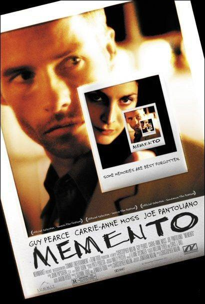

|
||||
| Parasitos | Interestellar | Dune | 1917 | |
|
 | |
||
| Malditos Bastardos | Memento | Capitán Fantástico | Club de la lucha |
Tanto Gi Taek (Song Kang-ho) como su familia están sin trabajo. Cuando su hijo mayor, Gi Woo (Choi Woo-sik), empieza a dar clases particulares en casa de Park (Lee Seon-gyun), las dos familias, que tienen mucho en común pese a pertenecer a dos mundos totalmente distintos, comienzan una interrelación de resultados imprevisibles.
Al ver que la vida en la Tierra está llegando a su fin, un grupo de exploradores dirigidos por el piloto Cooper (McConaughey) y la científica Amelia (Hathaway) emprende una misión que puede ser la más importante de la historia de la humanidad: viajar más allá de nuestra galaxia para descubrir algún planeta en otra que pueda garantizar el futuro de la raza humana.
Arrakis, el planeta del desierto, feudo de la familia Harkonnen desde hace generaciones, queda en manos de la Casa de los Atreides después de que el emperador ceda a ésta la explotación de las reservas de especia, una de las materias primas más valiosas de la galaxia y también una droga capaz de amplificar la conciencia y extender la vida. El duque Leto (Oscar Isaac), la dama Jessica (Rebecca Ferguson) y el hijo de ambos, Paul Atreides (Timothée Chalamet), llegan al planeta con la esperanza de recuperar el renombre de su casa, pero pronto se verán envueltos en una trama de traiciones y engaños que les llevarán a cuestionar su confianza entre sus más allegados y a valorar a los lugareños, los Fremen, una estirpe de habitantes del desierto con una estrecha relación con la especia.
En lo más crudo de la Primera Guerra Mundial, dos jóvenes soldados británicos, Schofield (George MacKay) y Blake (Dean-Charles Chapman) reciben una misión aparentemente imposible. En una carrera contrarreloj, deberán atravesar el territorio enemigo para entregar un mensaje que evitará un mortífero ataque contra cientos de soldados, entre ellos el propio hermano de Blake.
Segunda Guerra Mundial (1939-1945). En la Francia ocupada por los alemanes, Shosanna Dreyfus (Mélanie Laurent) presencia la ejecución de su familia por orden del coronel Hans Landa (Christoph Waltz). Después de huir a París, adopta una nueva identidad como propietaria de un cine. En otro lugar de Europa, el teniente Aldo Raine (Brad Pitt) adiestra a un grupo de soldados judíos ("The Basterds") para atacar objetivos concretos. Los hombres de Raine y una actriz alemana (Diane Kruger), que trabaja para los aliados, deben llevar a cabo una misión para hacer caer a los jefes del Tercer Reich. El destino quiere que todos se encuentren bajo la marquesina de un cine donde Shosanna espera para vengarse.
La memoria de Leonard, un investigador de una agencia de seguros, está irreversiblemente dañada debido a un golpe sufrido en la cabeza cuando intentaba evitar el asesinato de su mujer: éste es el último hecho que recuerda del pasado. La memoria reciente la ha perdido: los hechos cotidianos desaparecen de su mente en unos minutos. Así pues, para investigar e intentar vengar el asesinato de su esposa tiene que recurrir a la ayuda de una cámara instantánea y a las notas tatuadas en su cuerpo.
Ben (Viggo Mortensen) es un hombre que ha pasado diez años viviendo en los remotos bosques situados en el noroeste de los Estados Unidos criando a sus seis hijos, varios de ellos junto a su mujer. Aislados totalmente de la vida moderna, de las comodidades de las ciudades y de la sociedad de consumo, Ben es un padre devoto que ha inculcado en sus hijos una peculiar forma de pensar y vivir la vida. Sin embargo, una trágica noticia hace que la peculiar familia deba dejar temporalmente su modo de vida en la naturaleza y volver a la civilización.
Un joven hastiado de su gris y monótona vida lucha contra el insomnio. En un viaje en avión conoce a un carismático vendedor de jabón que sostiene una teoría muy particular: el perfeccionismo es cosa de gentes débiles; sólo la autodestrucción hace que la vida merezca la pena. Ambos deciden entonces fundar un club secreto de lucha, donde poder descargar sus frustaciones y su ira, que tendrá un éxito arrollador.